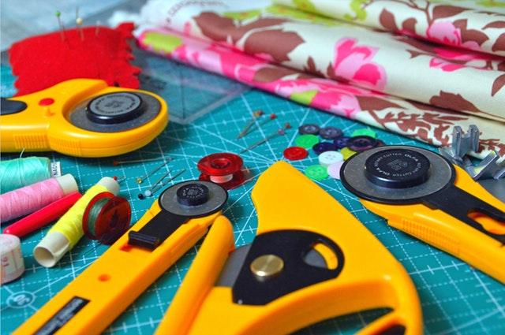
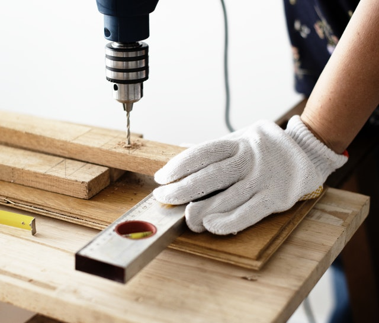

Sewing and Stitching Crafts
By: Adi
Jan 11, 2021

Sewing is the craft of fastening or attaching objects using stitches made with a needle and thread. Sewing is one of the oldest of the textile arts, arising in the Paleolithic era. Before the invention of spinning yarn or weaving fabric, archaeologists believe Stone Age people across Europe and Asia sewed fur and skin clothing using bone, antler or ivory needles and "thread" made of various animal body parts including sinew, catgut, and veins.
Poster Making
By: Adi
Jan 19, 2021
A poster is a temporary promotion of an idea, product, or event put up in a public space for mass consumption.[1] Typically, posters include both textual and graphic elements, although a poster may be either wholly graphical or wholly text. Posters are designed to be both eye-catching and informative. Posters may be used for many purposes. They are a frequent tool of advertisers (particularly of events, musicians, and films), propagandists, protestors, and other groups trying to communicate a message.
DIY Woodworking
By: Adi
Feb 4, 2021

Woodworking is the activity or skill of making items from wood, and includes cabinet making (cabinetry and furniture), wood carving, joinery, carpentry, and woodturning. Along with stone, clay and animal parts, wood was one of the first materials worked by early humans. Microwear analysis of the Mousterian stone tools used by the Neanderthals show that many were used to work wood.